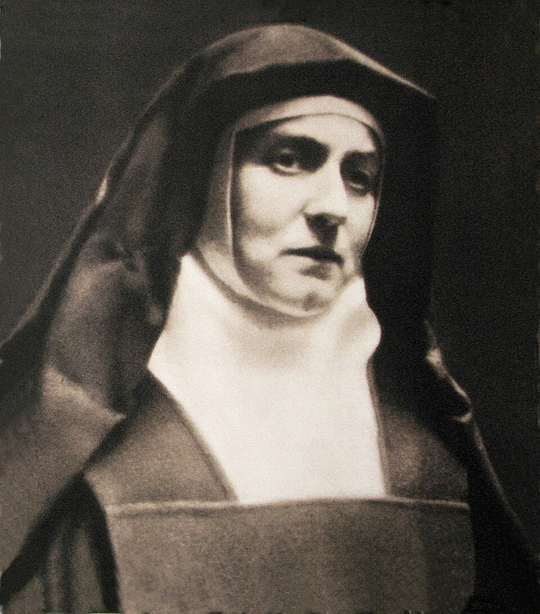
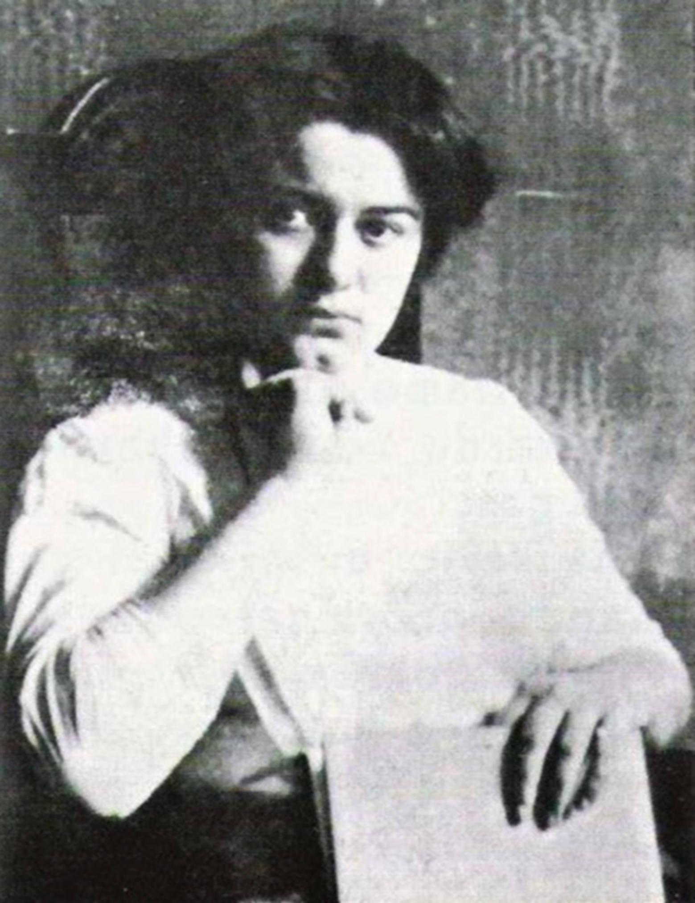
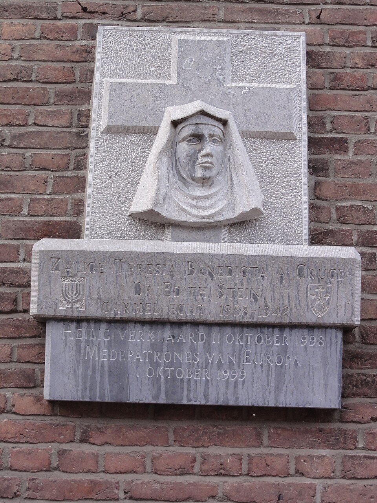

افتح عينيك · أصغِ · تكلّم — لا تجعل الذاكرة تموت
إن كنت شاهداً، ناجياً، قريباً، صديقاً، مسعفاً، طبيباً، صحفياً، أو تحمل ذكرى إنسان رحل، يمكنك أن تترك شهادتك أو ذكراك في السجل الحي.
أنت تختار مستوى الخصوصية والنشر. لا تُنشر الشهادة علناً لمجرد إرسالها؛ المراجعة والموافقة جزء من المسار.إديث شتاين
1891–1942 · فيلسوفة وباحثة في الظاهراتية والتعاطف، ناشطة مبكرة في قضايا المرأة، ممرضة في الحرب، مترجمة ومدرّسة وكاتبة، ثم راهبة كرملية باسم تريزا بندكتا للصليب. لا تُقرأ حياتها فقط من نهايتها في أوشفيتز؛ بل من سؤال ظل يرافقها منذ أطروحتها الأولى: كيف نعرف الآخر بوصفه إنساناً حقيقياً لا مجرد فكرة؟

1 · طفلة يهودية في يوم الغفران
وُلدت إديث شتاين في بريسلاو في 12 أكتوبر 1891، أصغر أطفال أسرة يهودية كبيرة، في يوم الغفران اليهودي. توفي والدها وهي صغيرة، فتولت أمها أوغوسته إدارة تجارة الخشب ورعاية الأسرة. نشأت إديث وسط يهودية حيّة في بيتها، لكنها في المراهقة ابتعدت عن الممارسة الدينية وتوقفت عن الصلاة بإرادتها. هذا الانقطاع لم يُنه بحثها؛ بل نقل سؤالها من التقليد الموروث إلى البحث الفلسفي الشخصي عن الحقيقة.
2 · الجامعة، المرأة، والحق في التفكير
التحقت بجامعة بريسلاو سنة 1911 ودرست الألمانية والتاريخ، لكن اهتمامها الحقيقي كان بالفلسفة وقضايا المرأة. انضمت إلى الجمعية البروسية لحق المرأة في التصويت، وكانت في شبابها مناصرة قوية لحقوق النساء. في 1913 انتقلت إلى غوتينغن لتدرس مع إدموند هوسرل، أحد مؤسسي الظاهراتية. لم تكن مجرد طالبة في هامش مدرسة فلسفية؛ أصبحت من أبرز تلامذته ثم مساعدته في فرايبورغ.


3 · الحرب العالمية الأولى: الفلسفة أمام الجسد المتألم
مع اندلاع الحرب العالمية الأولى تلقت تدريباً في التمريض وتطوعت في مستشفى ميداني نمساوي. عملت في جناح التيفوس وفي غرفة العمليات ورأت جنوداً شباناً يموتون. هذه التجربة مهمة في قراءة مشروعها الفكري: «التعاطف» عند شتاين لم يكن مجرد عاطفة لطيفة، بل مشكلة معرفية وأخلاقية تتعلق بكيف ندرك خبرة شخص آخر من دون أن نختزلها إلى خبرتنا نحن.
4 · «مشكلة التعاطف» — إنجازها الفلسفي الأول
في 1917 نالت الدكتوراه بمرتبة summa cum laude عن أطروحتها «حول مشكلة التعاطف». بحثت فيها كيف يصبح وعي الآخر متاحاً لنا: نحن لا نشعر ألم الآخر كما يشعر به هو، لكننا نستطيع إدراكه كخبرة تخص ذاتاً أخرى. هذه الفكرة صارت من أشهر أبواب دراسة شتاين اليوم، لأنها تقع عند تقاطع الظاهراتية وعلم النفس والفلسفة الأخلاقية وفهم العلاقات الإنسانية.
عدسة LuxDot هنا واضحة: التعاطف ليس ادعاء «أنا أعرف تماماً ما تشعر به»، بل الاعتراف بأن تجربة الآخر حقيقية ومختلفة، وأن معرفتنا بها محدودة لكنها كافية لتنشئ مسؤولية.
5 · هوسرل والجامعة والسقف الذي وُضع أمام النساء
عملت شتاين مساعدة لهوسرل، لكنها أرادت مساراً أكاديمياً مستقلاً. اصطدمت بحقيقة أن أبواب الأستاذية الألمانية كانت شبه مغلقة أمام النساء. هوسرل نفسه كتب توصية قوية لها، لكن طموحها إلى كرسي جامعي لم يتحقق. ثم أضيف إلى حاجز الجنس لاحقاً حاجز العنصرية النازية ضد اليهود. لذلك تُقرأ سيرتها أيضاً كتاريخ لامرأة ذات كفاءة أكاديمية عالية كان عليها أن تقاتل مرتين كي يُسمح لها فقط بأن تكون باحثة.
6 · التحول الديني من دون محو الأصل اليهودي
مرّ تحولها إلى المسيحية بمراحل طويلة، وتأثرت بتجارب وأشخاص وقراءات متعددة. في صيف 1921 قرأت سيرة تريزا الأفيلاوية، وفي 1 يناير 1922 تعمدت في الكنيسة الكاثوليكية. لكن شتاين لم تتعامل مع اعتناقها الكاثوليكية بوصفه محواً ليهوديتها العائلية والتاريخية. لاحقاً كتبت عن «حياة أسرة يهودية» ورأت أن من نشأوا في اليهودية عليهم أن يشهدوا للحياة اليهودية في زمن كانت فيه النازية تربي جيلاً على الكراهية العرقية.
7 · معلّمة ومحاضرة ومترجمة
من 1923 حتى 1931 درّست في مدرسة ومعهد إعداد معلمات تابعين للدومينيكانيات في شباير، وألقت محاضرات عديدة خصوصاً حول تعليم المرأة ودورها وتكوينها. ترجمت إلى الألمانية أعمالاً ورسائل لجون هنري نيومان، كما ترجمت وناقشت نصوص توما الأكويني، محاولة بناء حوار بين الفلسفة المدرسية والظاهراتية الحديثة. بالنسبة إليها، لم تعد الدراسة منافساً للحياة الروحية؛ صارت شكلاً من أشكال الخدمة.
8 · أعمالها الكبرى: من الإمكان والفعل إلى الوجود
كتبت «الإمكان والفعل» ثم أعادت صياغة مشروعها في عملها الفلسفي واللاهوتي الكبير «الوجود المتناهي والأبدي». اهتمت بالإنسان والشخص والحرية والعلاقة بين الجوهر والوجود، وحاولت الجمع بين أدوات الظاهراتية والفكر التوماوي من دون إذابة أحدهما في الآخر. وفي سنواتها الأخيرة كتبت «علم الصليب» عن يوحنا الصليب، وهو عمل بقي غير مكتمل بسبب اعتقالها.
9 · 1933: عندما أصبح الأصل جريمة في نظر الدولة
بعد وصول النازيين إلى السلطة، جعلت القوانين العنصرية استمرارها في التدريس مستحيلاً. لم تكن المشكلة في عقيدتها الكاثوليكية ولا في قدرتها العلمية؛ الدولة صنفتها وفق أصلها اليهودي. في أكتوبر 1933 دخلت دير الكرمليات في كولونيا واتخذت اسم تريزا بندكتا للصليب. أخذت نذورها المؤقتة سنة 1935 والدائمة سنة 1938.
10 · إيخت: اللجوء إلى هولندا
بعد ليلة البلور وتصاعد العنف ضد اليهود، نُقلت في ليلة رأس السنة 1938 إلى دير الكرمليات في إيخت بليمبورغ الهولندية حفاظاً على سلامتها. لحقت بها أختها روزا، التي كانت قد اعتنقت الكاثوليكية أيضاً. في إيخت واصلت الكتابة والعمل الفكري، وأكملت أجزاء كبيرة من «علم الصليب» ودوّنت وصيتها في 1939.
11 · لماذا اعتُقلت في هولندا؟
في يوليو 1942 تليت في الكنائس الكاثوليكية الهولندية رسالة احتجاج علنية ضد اضطهاد اليهود وترحيلهم. ردت سلطات الاحتلال النازي باعتقال كاثوليك من أصول يهودية. في 2 أغسطس 1942 اعتقل الغيستابو إديث وروزا في دير إيخت. نُقلتا أولاً إلى أميرسفورت ثم إلى معسكر فيستربورك.
12 · فيستربورك: الشاهدة بين الأطفال والأمهات
وصلت شهادات من فيستربورك تصف شتاين هادئة ومهتمة بالأطفال والنساء وسط الفوضى والخوف. يجب التعامل مع تفاصيل كل شهادة على حدة، لكن الصورة العامة المتواترة هي أنها لم تنكفئ إلى ذاتها في الأيام الأخيرة. الذاكرة الحية لا تستخدم ذلك لصنع أسطورة مثالية؛ بل لتذكيرنا بأن الشخصية التي كتبت عن التعاطف وجدت نفسها أخيراً وسط أشخاص صاروا ضحايا لتصنيف عنصري شامل.
13 · القطار إلى أوشفيتز
2 أغسطس 1942
اعتقال إديث وروزا شتاين في دير إيخت.
4 أغسطس
نقلهما إلى معسكر فيستربورك في هولندا المحتلة.
7 أغسطس
ترحيل 987 يهودياً من فيستربورك باتجاه أوشفيتز.
8 أغسطس
وصول القطار. ضم النقل 510 رجال وفتيان و477 امرأة وفتاة، وبينهم عشرات من اليهود الكاثوليك.
الانتقاء
أُدخل 315 رجلاً و149 امرأة إلى المعسكر، بينما قُتل 523 شخصاً آخرين، ومن بينهم إديث وروزا، في غرف الغاز في بيركيناو.
9 أغسطس 1942
يوثق متحف أوشفيتز هذا التاريخ باعتباره يوم مقتل إديث شتاين في بيركيناو.
صار السؤال: ماذا يحدث للإنسان عندما تبني الدولة نظامها على ألا تراه إنساناً؟
14 · روزا شتاين: لا نحفظ إديث وحدها
رُحلت أختها روزا معها وقُتلت معها. لذلك لا تعرض LuxDot إديث كشهيدة منفردة خرجت من فراغ. حولها عائلة، وشعب يهودي يتعرض للإبادة، ونساء ورجال وأطفال في النقل نفسه، وملايين آخرون استهدفهم المشروع النازي. اسم إديث يفتح باب الذاكرة؛ لكنه لا يغلقه على شخصية واحدة.
15 · ما الذي أنجزته فعلاً؟
- إسهام مبكر ومؤثر في الظاهراتية، وخاصة دراسة التعاطف والشخص
- عمل مباشر مع إدموند هوسرل ومشاركة في البيئة المؤسسة للظاهراتية الحديثة
- دكتوراه بمرتبة ممتازة سنة 1917
- خدمة تمريضية خلال الحرب العالمية الأولى
- نشاط في قضايا تعليم المرأة وحقها في المشاركة العامة والأكاديمية
- تدريس وتكوين معلمات ومحاضرات عامة في التربية والأنثروبولوجيا
- ترجمة نيومان وتوما الأكويني وبناء جسر بين الفلسفة الحديثة والفكر المدرسي
- كتابة «الإمكان والفعل»، «الوجود المتناهي والأبدي»، «حياة أسرة يهودية»، و«علم الصليب»
- حفظ شهادة شخصية عن الهوية اليهودية في زمن العنصرية النازية
- تحول حياتها نفسها إلى نقطة التقاء مؤلمة بين الفلسفة واليهودية والمسيحية والهولوكوست
16 · الذاكرة بعد 1942
طوّبها يوحنا بولس الثاني في كولونيا في 1 مايو 1987، وأعلن قداستها في 11 أكتوبر 1998. وفي 1999 أعلنها واحدة من شفيعات أوروبا. لكن موقعها في الذاكرة ليس بسيطاً أو خالياً من الأسئلة؛ تقديس ضحية يهودية اعتنقت المسيحية يفرض حساسية خاصة حتى لا تُستعمل قصتها لمحو يهودية الضحايا أو تحويل المحرقة إلى حكاية كنسية. لذلك تضع LuxDot الهولوكوست في المركز التاريخي للجريمة، وتحافظ على هوية شتاين المركبة كما عبّرت عنها هي نفسها.
17 · الصلة بكولبة — من دون دمج القصتين
مات ماكسيميليان كولبة في أوشفيتز في 14 أغسطس 1941، وقُتلت إديث شتاين في بيركيناو في 9 أغسطس 1942. كلاهما صار شخصية كاثوليكية بارزة مرتبطة بذاكرة أوشفيتز، لكن قصتيهما مختلفتان جذرياً: كولبة سجين اختار أن يأخذ مكان سجين آخر في عقوبة موت؛ شتاين قُتلت لأنها صُنفت يهودية ضمن سياسة الإبادة النازية. وضعهما بجانب بعضهما يجب أن يزيد دقة الذاكرة لا أن يسوي الفروق.
18 · عدسة LuxDot
حقيقة موثقة: تاريخ الميلاد والدراسة، الدكتوراه، العمل مع هوسرل، التمريض، التحول الديني، التدريس، الدير، الانتقال إلى إيخت، الاعتقال، فيستربورك، النقل، والقتل في بيركيناو.
طبقة فكرية: معنى التعاطف، الشخص، الحرية، والحقيقة في أعمالها الفلسفية.
حساسية الذاكرة: شتاين قديسة كاثوليكية وضحية يهودية للنازية في آن واحد؛ لا ينبغي استخدام أحد الوصفين لمحو الآخر.
السؤال المفتوح: إذا كان التعاطف يعني أن نعترف بتجربة إنسان آخر حتى عندما لا نستطيع امتلاكها، فماذا يلزمنا أن نفعل عندما يبدأ المجتمع بتحويل ذلك الإنسان إلى رقم أو فئة أو «مشكلة»؟
المصادر الأساسية
- الفاتيكان — السيرة الرسمية لإديث شتاين
- الفاتيكان — عظة إعلان القداسة، 11 أكتوبر 1998
- متحف أوشفيتز–بيركيناو — الذكرى 80 لمقتل إديث شتاين
- أرشيف إديث شتاين في كولونيا — المخطوطات والإرث البحثي
- Wikimedia Commons — صورة شتاين الطالبة، ملكية عامة
- Wikimedia Commons — صورة شتاين الكرملية
- Wikimedia Commons — نصب دير إيخت، CC0
النسخة العربية هنا هي النسخة المرجعية الحالية لملف الذاكرة، مع إبقاء الأسماء الأجنبية فقط عندما تساعد على التحقق من المصدر.